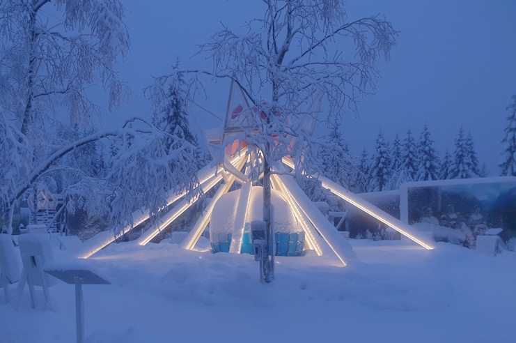
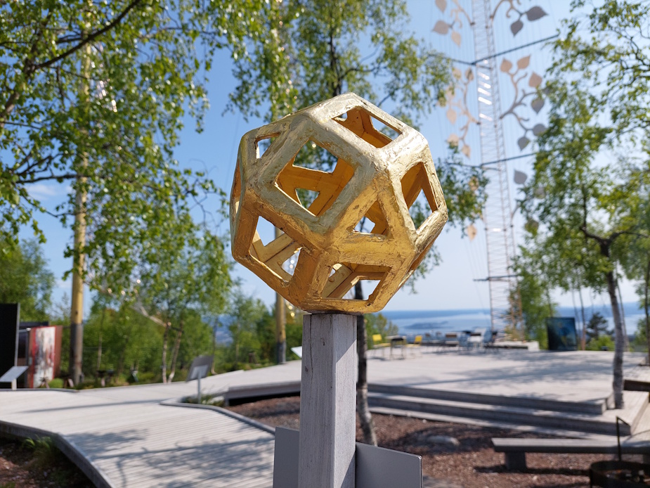
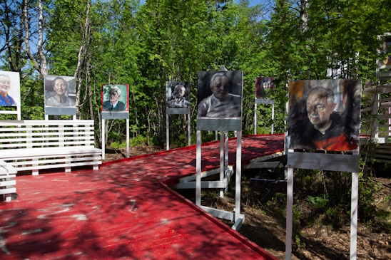

Fem gullseil over byen
П'ять золотих вітрил над містом
Fra store deler av Oslo kan du se dem skimre på høyden bak Frognerseteren: fem gullfargede seil, det høyeste 32 meter, reist mot himmelen ved inngangen til Nordmarka. De er hjertet i Roseslottet – en hel kunstpark som brødrene Vebjørn og Eimund Sand har skapt for å fortelle om krigen i Norge, og om verdiene som ble satt ut av kraft da landet var okkupert.

En kunstpark om krig og verdier
Roseslottet er en kunstinstallasjon ved Frognerseteren, skapt av brødrene Vebjørn Sand og Eimund Sand. Parken markerte at det i 2020 var 80 år siden Norge ble okkupert av Nazi-Tyskland, og 75 år siden frigjøringen. Gjennom malerier og installasjoner forteller den om andre verdenskrig i Norge – og om de grunnleggende prinsippene for demokrati, rettsstat og humanisme som ble satt ut av kraft under okkupasjonen. Navnet er inspirert av Den hvite rose, den tyske ikke-voldelige motstandsgruppen.
Tidligere etterretningssjef Kjell Grandhagen var mentor for prosjektet. Da det ble lansert 9. april 2019, sa han:
«Det er en flott, verdig, moderne kunstinstallasjon, som gjennom 13 måneder vil glede Norges befolkning – unge som gamle. Og som vil minne oss om et kapittel i historien vi håper vi aldri vil oppleve igjen. Men først og fremst skal Roseslottet minne oss om de verdiene i samfunnet vårt vi må verne om – og aldri ta for gitt.»
Roseslottet skulle åpnet på selve 75-årsdagen for frigjøringen, 8. mai 2020, men på grunn av covid-19 ble åpningen forskjøvet til 13. juni 2020. På samme høyde sto tidligere Trollslottet (1997/98) og Keplerstjernen (2000), som Vebjørn Sand også sto bak. I 2022 mottok Roseslottet Sønstebyprisen.
250 meter i spiral
Kunstparken ligger på høyden bak Frognerseteren, ved inngangen til Nordmarka, og dekker et område på 75 meter i diameter. Gjennom parken går man på en 250 meter lang vei formet som en spiral. Langs spiralen står ulike kunstverk, blant annet 95 monumentale malerier som hovedsakelig viser motiver fra andre verdenskrig i Norge. I midten venter installasjonen De Ufødtes Stjerne, og rundt den de fem gullfargede seilene på mellom 26 og 32 meter, synlige fra store deler av Oslo og områdene rundt. Kunstverkene er integrert i naturen – flere steder er installasjonene bygget rundt gamle «istidsbjerk» som har fått stå.

En scene med utsikt over hovedstaden
I Roseslottet er det også en utendørs scene med utsikt over byen og områdene rundt. Herfra fremføres konserter, foredrag og andre kulturelle innslag gjennom sesongen. Roseslottets musikalske leder er komponisten Martin Romberg.
153 malerier av Vebjørn Sand
Roseslottet inneholder 153 malerier, alle malt av Vebjørn Sand. Av dem er 95 monumentale friluftsmalerier på mellom 3×4 og 4×6 meter, som hovedsakelig viser motiver fra Norge under okkupasjonen 1940–45. Sand skildrer et bredt spekter av temaer, både kjente og mindre kjente sider ved krigen: krigsfangenes lidelser, de ukjente enkelt-individene, hverdagslivet, krigsseilernes drama og motstandskampene i sør og nord. En egen maleri- og lydinstallasjon, Ellinors Hus, handler om forfølgelsen av de norske jødene og om Holocaust. Noen malerier viser også vendepunkter i verdenskrigen utenfor Norge.
Bildene er malt i farger eller gråtoner, med mange ulike teknikker. I noen er det brukt sand, stein, karbon, jord og til og med kvister – for eksempel der skogscener skildres. Selve maleriene er laget med akryl på PVC-skum, med en overflatebehandling i epoksy som tåler å henge ute hele året.
Historiens Ansikter
Inngangspartiet til parken rommer portrettgalleriet Historiens Ansikter – 37 malerier av tidsvitner fra andre verdenskrig. Som forberedelse reiste Vebjørn Sand rundt i Norge og til utlandet for å møte mennesker som selv hadde opplevd ulike sider ved okkupasjonen. Blant dem er motstandsfolk, Holocaust-overlevende, en sovjetisk krigsfange i Norge, ofre for tvangsevakueringen og nedbrenningen av Finnmark og Nord-Troms, og en krigsseiler.

Installasjonene – og kunstnernes egne ord
I Roseslottet har Eimund Sand og Vebjørn Sand skapt installasjoner som peker på ulike sider ved krigen i Norge, og på verdiene som ble satt ut av kraft da landet var okkupert. I flere av dem brukes geometri for å visualisere universelle verdier. Om hva de vil med verket, sier kunstnerne selv:
Vi ønsker å fortelle historien om krigen uten å demonisere eller glorifisere, sentralt i fortellingen står individet og dets valg.
Vi berører både kjente og mindre kjente sider ved okkupasjonen: krigsfangenes lidelser, de ukjente enkelt-individene, hverdagslivet, krigsseilernes drama, motstandskampene i sør og nord.
Forfølgelsen av de norske jødene får stor oppmerksomhet i billedserien, og antisemittismen, før og under krigen, skildres.
Det kunstneriske språket ønsker å engasjere, utfordre og konfrontere. Kort sagt, vekke til live. Vi ser ikke på verden med et akademisk/analytisk blikk.
Åpningstider, billetter og program varierer gjennom året. Det finner du på Roseslottets egne sider: roseslottet.no.
З великої частини Осло видно, як вони мерехтять на висоті за Frognerseteren: п'ять золотавих вітрил, найвище — 32 метри, здійняті до неба біля входу в Nordmarka. Вони — серце Roseslottet, цілого парку мистецтва, який брати Vebjørn і Eimund Sand створили, щоб розповісти про війну в Норвегії й про цінності, що були скасовані, коли країна була окупована.
Парк мистецтва про війну й цінності
Roseslottet — це мистецька інсталяція біля Frognerseteren, створена братами Vebjørn Sand і Eimund Sand. Парк відзначив, що у 2020 році минуло 80 років від окупації Норвегії нацистською Німеччиною і 75 років від визволення. Через картини та інсталяції він розповідає про Другу світову війну в Норвегії — і про основоположні принципи демократії, правової держави та гуманізму, які були скасовані під час окупації. Назву надихнула «Біла троянда» (Den hvite rose) — німецька ненасильницька група опору.
Колишній керівник розвідки Kjell Grandhagen був ментором проєкту. Коли його презентували 9 квітня 2019 року, він сказав:
«Це чудова, гідна, сучасна мистецька інсталяція, яка протягом 13 місяців тішитиме населення Норвегії — і молодих, і старих. І яка нагадуватиме нам про розділ історії, який, сподіваємося, ми ніколи більше не переживемо. Але передусім Roseslottet має нагадувати нам про ті цінності нашого суспільства, які ми мусимо берегти — і ніколи не сприймати як належне.»
Roseslottet мало відкритися саме в 75-ту річницю визволення, 8 травня 2020 року, але через covid-19 відкриття перенесли на 13 червня 2020 року. На тій самій висоті раніше стояли Trollslottet (1997/98) і Keplerstjernen (2000), за якими теж стояв Vebjørn Sand. У 2022 році Roseslottet отримало премію Sønstebyprisen.
250 метрів спіраллю
Парк мистецтва лежить на висоті за Frognerseteren, біля входу в Nordmarka, і охоплює територію 75 метрів у діаметрі. Парком проходять 250-метровою дорогою у формі спіралі. Уздовж спіралі стоять різні твори, зокрема 95 монументальних картин, що здебільшого показують мотиви Другої світової війни в Норвегії. У центрі чекає інсталяція «Зірка ненароджених» (De Ufødtes Stjerne), а навколо неї — п'ять золотавих вітрил заввишки від 26 до 32 метрів, видимих з великої частини Осло й околиць. Твори вписані в природу — подекуди інсталяції збудовані навколо старих «льодовикових беріз» (istidsbjerk), яким дали залишитися.
Сцена з краєвидом на столицю
У Roseslottet є також відкрита сцена з краєвидом на місто й околиці. Звідси протягом сезону відбуваються концерти, лекції та інші культурні події. Музичний керівник Roseslottet — композитор Martin Romberg.
153 картини Vebjørn Sand
Roseslottet містить 153 картини, усі написані Vebjørn Sand. З них 95 — монументальні картини просто неба, розміром від 3×4 до 4×6 метрів, що здебільшого показують мотиви Норвегії під час окупації 1940–45 років. Sand змальовує широкий спектр тем, як відомих, так і менш відомих сторін війни: страждання військовополонених, невідомих окремих людей, повсякдення, драму моряків торгового флоту й рух опору на півдні та півночі. Окрема картинно-звукова інсталяція «Дім Елінор» (Ellinors Hus) розповідає про переслідування норвезьких євреїв і про Голокост. Деякі картини показують також переломні моменти світової війни поза Норвегією.
Картини написані в кольорі або у відтінках сірого, багатьма різними техніками. У деяких використано пісок, камінь, вугілля, землю й навіть гілки — наприклад там, де змальовано лісові сцени. Самі картини виконані акрилом на ПВХ-піні, з покриттям з епоксидної смоли, що витримує висіння просто неба цілий рік.
Обличчя історії
Вхідна частина парку вміщає портретну галерею «Обличчя історії» (Historiens Ansikter) — 37 картин зі свідками часу Другої світової війни. Як підготовку Vebjørn Sand об'їздив Норвегію та виїздив за кордон, щоб зустрітися з людьми, які самі пережили різні сторони окупації. Серед них — учасники руху опору, ті, хто пережив Голокост, радянський військовополонений у Норвегії, жертви примусової евакуації та спалення Finnmark і Nord-Troms, і моряк торгового флоту.
Інсталяції — і власні слова митців
У Roseslottet Eimund Sand і Vebjørn Sand створили інсталяції, що вказують на різні сторони війни в Норвегії й на цінності, які були скасовані, коли країна була окупована. У кількох із них використано геометрію, щоб візуалізувати універсальні цінності. Про те, чого вони прагнуть своїм твором, митці кажуть самі:
Ми хочемо розповісти історію війни, не демонізуючи й не глорифікуючи; у центрі розповіді стоїть особистість і її вибір.
Ми торкаємося як відомих, так і менш відомих сторін окупації: страждань військовополонених, невідомих окремих людей, повсякдення, драми моряків торгового флоту, руху опору на півдні та півночі.
Переслідування норвезьких євреїв отримує велику увагу в серії картин, і змальовано антисемітизм до і під час війни.
Мистецька мова прагне залучати, кидати виклик і конфронтувати. Коротко кажучи — пробуджувати до життя. Ми не дивимося на світ академічно-аналітичним поглядом.
Години роботи, квитки й програма змінюються протягом року. Їх можна знайти на власному сайті Roseslottet: roseslottet.no.
Kilder
Her er du
Slik blir du med på jakten
Finn stolpene rundt om i Vestre Aker, skann QR-koden og les historien om hvert sted. Velg et kallenavn – så samler du poeng for hvert nye sted du besøker. Ingen innlogging, ingen app.
Se kart og kom i gang